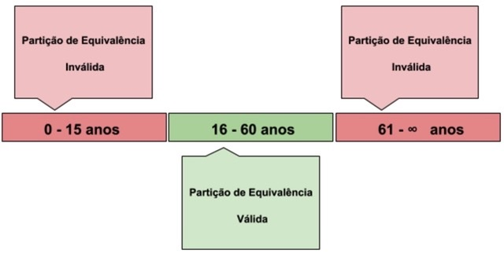
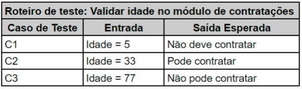
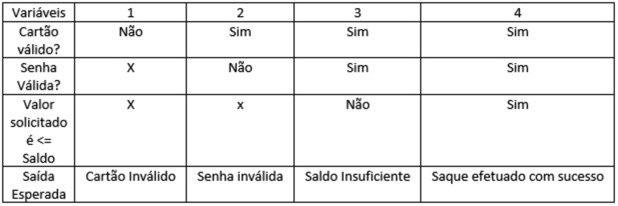

Quando olhamos para os requisitos de negócio, precisamos levantar os cenários básicos para a aplicaçāo. Fazemos o levantamento de cenários com base em:""Cenários básicos - olhamos para os critérios e mapeamos com base em nossa experiencia.
Partição de equivalência
Essa técnica visa identificarmos as entradas do usuário na aplicação e então dividi-las em faixas de valores possíveis, para que usemos os dados eleitos como base para o teste.
Passo a passo:
Exemplo na prática
Considere que na sua empresa há um sistema de recursos humanos que processa pedidos de emprego com base na idade de uma pessoa e que possui as seguintes regras de negócio. Dividindo estas regras em entradas possíveis para o sistema, teremos:

Para obter uma cobertura de 100% com essa técnica, os casos de teste devem cobrir todas as partições identificadas (incluindo partições inválidas)* usando no mínimo um valor de cada partição.
Para exemplificar, tomemos como base o exemplo acima para a criação dos casos de testes a seguir:

Análise do valor limite
Analisamos os valores limites a fim de validar que aplicamos corretamente os limites para cada partição da aplicação
Na partição de equivalência, testamos com qualquer faixa de valores. Na análise de valor limite, testamos sempre os limites entre as partições.
Exemplo
Regra de negócio:
é permitido o saque de 400.
Então validamos os saques de valores limites:
Saque de $399,99 e $400,01
Tabela de decisão
Consiste em analisar as combinações entre as condições de um teste e definir qual o resultado esperado.
Para ficar mais claro vamos utilizar como exemplo o saque de dinheiro em um caixa eletrônico:

Utilizando a tabela de decisão temos certeza de que nossas 3 condições foram cobertas em 4 testes.